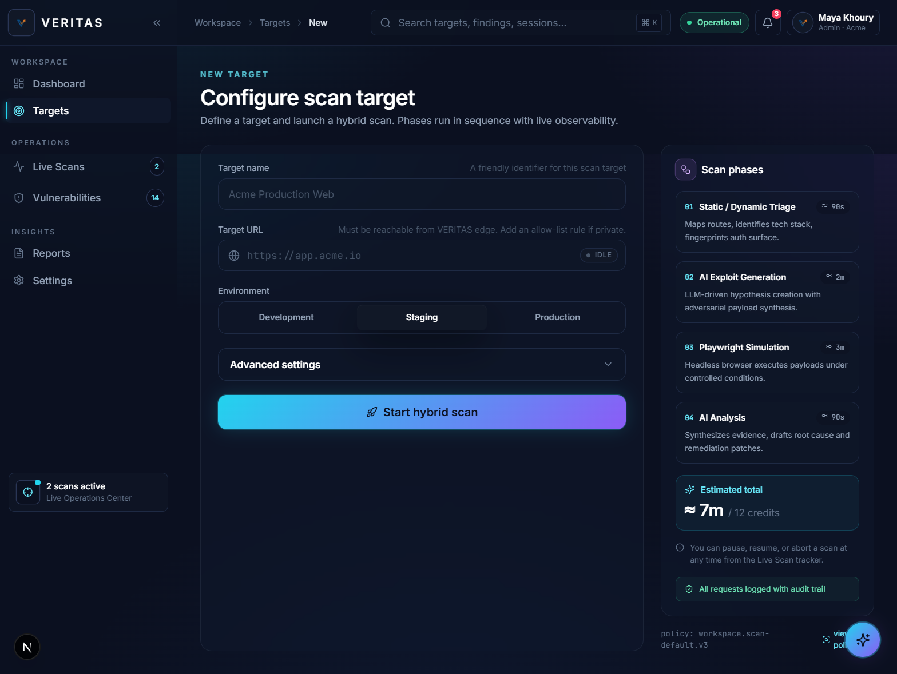

Web Vulnerability Evaluation and Real-time Intelligence Through Automated Simulation
"Develop a browser-simulation-based security validation system that assists developers regardless of their foundational security knowledge in securing both traditional and AI-generated web applications."
\"Shifting the security paradigm from detection-only to exploit-confirmation.\"
| Vulnerability Category | CWEs | Max Incidence | Total CVEs |
|---|---|---|---|
| Broken Access Control | 40 | 20.15% | 32,654 |
| Security Misconfiguration | 16 | 27.70% | 1,375 |
| Injection | 37 | 13.77% | 62,445 |
| Insecure Design | 39 | 22.18% | 7,647 |
| Authentication Failures | 36 | 15.80% | 7,147 |
| Parameter | Human-Written Code | AI-Generated Code |
|---|---|---|
| Structural complexity | Higher, more maintainable variation | Lower, simpler, reduced lexical diversity |
| High-risk vulnerabilities | Lower proportion | Significantly higher proportion |
| Repetition & unused constructs | Lower | Higher, prone to debug remnants |
| Length & token usage | Higher (standard verbosity) | Lower |

AI-dependent developers face technical reports, false positives, and unverified findings. They need exploit validation and simplified remediation.
OWASP, AI-code risk studies, SAST and DAST limitations, simulation research, and AI explanation literature converge toward an integrated solution.
VERITAS connects detection, exploit confirmation, and AI-assisted remediation into one developer-oriented workflow.
\"The literature supports VERITAS not through any single source, but through the convergence of detection, simulation, and intelligence into one unified security pipeline.\"
Loading...